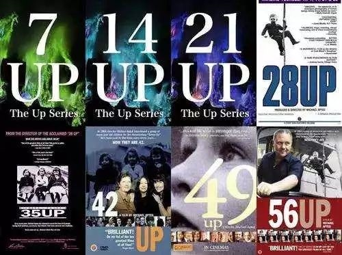
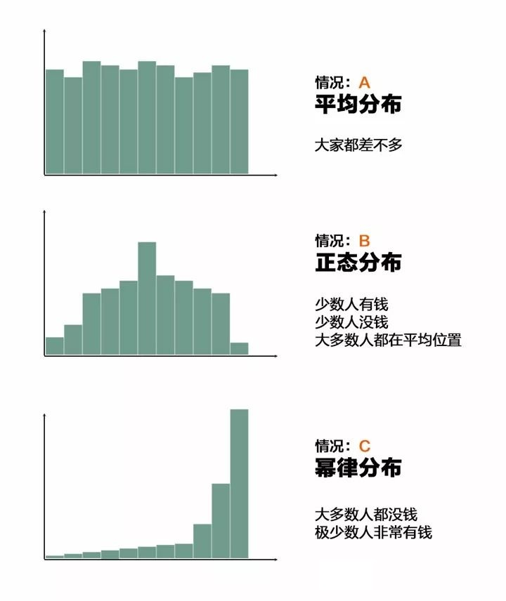
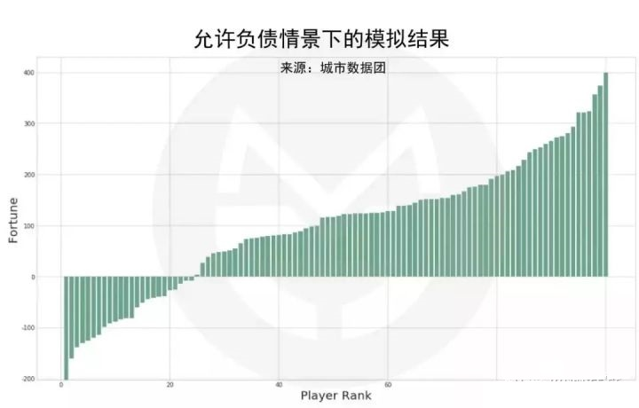
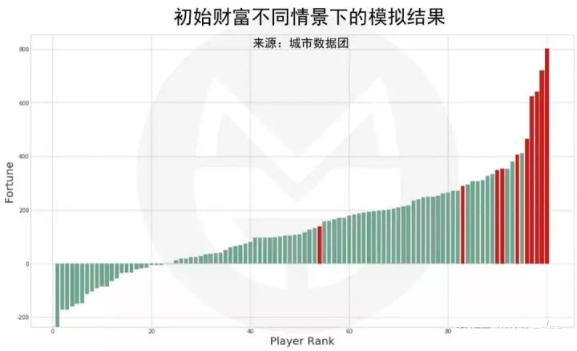
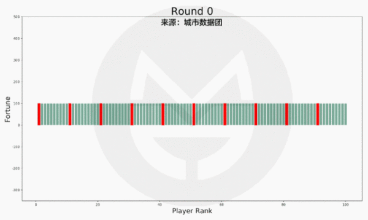

富人越富的时代，普通人如何逆袭？
📌阅读引导
本文字数5500+
据说坚持看完的人
外面看不到
📌正文开始
有一部纪录片叫做《人生七年》，导演是迈克尔·艾普特。纪录片拍摄于1964年，至今已经有50多年了。拍摄的内容是记录14个孩子，从他们7岁的时候开始，每隔七年就采访他们一次，采访内容是去了解他们这7年的生活变化。
这14个孩子出生于不同的家庭环境，有些是上流社会的精英家庭，有些则是普通的中产家庭，还有些是来自于社会底层的家庭，甚至是孤儿院。
整部纪录片想通过这种方式，试图去回答一个问题：“你的出身阶层能不能决定未来？富人的孩子是否还是富人？穷人的孩子是否依旧是穷人？我们的社会阶级是否真的已经固化？”

你猜结果是什么？
先留个悬念，你可以暂时带着这个问题和自己的猜想继续往下看另外一个案例。
📌什么决定未来
这个也是我最近在网上看到的有人对「阶级固化」做的一个非常有意思的财富分配模拟实验。实验是这样的：（实验数据来自于：城市数据团）
房间里有100人，每人都有100元，他们在玩一个游戏，每轮游戏每个人都要拿出一块钱随机给到另一人。
请问，最后这100个人的财富分布是怎样的？以下是三个不同的答案，请你猜猜会是哪个？

你可以把这场游戏看做是真实世界财富分配的简化模型，假设每个人是从18岁开始进入这个游戏的，每天玩一次，一直玩到65岁退休。每次拿出一块钱可以视作是日常消费；而获得一块钱的人，可以视作是提供了一次服务而获得的报酬。
完全随机是为了让游戏公平，每个人都可以提供同样的服务，获得同样的收入，以此来验证我们的假设。
从18岁到65岁，差不多是17000多天，所以，我们的模拟游戏执行17000次，过程中允许负债，也就是说，如果你没钱了可以问其他人借钱，我们来看看结果会如何：

说明：横轴代表财富的排名，越往右侧财富越多；纵轴代表财富的数值
刚开始的时候，大家的财富都是一样的，但是随着时间的推移，差不多在相当于人30岁的时候，数据开始逐渐拉开，并且越拉越大，最终财富的分配接近于情况C，也就是幂律分布，结果如下：
- 前10%的人掌握着三分之一的财富，前20%的人掌握着超过半数的财富；
- 最富有的人的财富为400元左右，是初始值的4倍；
- 而大约四分之一的人背负债务，最多为负债200元…
这意味着什么呢？
意味着在最公平的环境下，哪怕财富的分配方式完全随机，最终的结果也会是少部分富人掌握社会的大部分财富。而如果是在现实生活中，由于富人掌握的资源更多，他们获得财富的概率也会比穷人变得更高，因此，这个数值的差距会变得更加明显…
好，我们再来做一次实验，看看如果其中有一群人是富人的孩子，他们的起点设置的比普通人更高，结果会是如何？
富人还会是富人吗？
我们假设这100人中有10人是富二代，他们的初始值从100元调整为500元，其他人保持不变，游戏运行结果如下：

注：其中红色为富二代玩家
图形结果和前面一致，富二代中除了有个败家子跑到了社会中层（财富值依然超过普通人的初始值），其余的都依然在上流社会。
而财富总值的前六名全是富二代，前10大富豪中富二代也占了7名…
富人依然还是富人…
回到我们开篇《人生七年》的话题，最终这14位小孩，经过50年后，他们各自变得怎么样了？
你猜的没错，和这个模拟游戏结果几乎一致：
那些上流社会精英家庭的孩子… 他们拥有更好的教育，毕业后从事着更高级的工作，拥有更高的社会地位，现在依然在上流社会过着优越的生活。
那些中产阶层的孩子… 多数则延续着他们父辈简单而平凡生活，从事着教育或公益的工作。
而来自底层的那些孩子… 他们辍学、早恋、早婚、早育…如今几乎都从事着各种低端的工作，比如保安、修理工、清洁工等…而更可怕的是，他们的孩子也同样因为从小无法获得良好的教育，而重复循环着他们父辈的生活轨迹…
富人的孩子还是富人，穷人的孩子还是穷人…
这个社会似乎真的已经阶层固化！
但，其中有一位叫尼克的孩子，他从一个偏远地区只有一间屋子的小学，通过自己的努力，最终考上了牛津，后来去美国当了物理教授，虽然没有变的非常富有，但已突破了阶层的壁垒。
命运之手似乎也有漏网之鱼？
他是如何做到屌丝逆袭的？
我们中的绝大多数人，其实都和尼克一样，没有腰缠万贯的亲爹，没有一飞冲天的运气，我们都只是普普通通的一群人。想要改变命运，我们能怎么办呢？
📌跳出命运之轮
回到那个数学模型…
现在我们再次假设100个玩家每人初始值为100元。但这次，我们设定有10人比别人更加努力，从而获得了1%的竞争优势，从数据上来看，就是随机获得财富的概率提高1%，那么结果会如何呢？

注：红色为更努力的玩家
虽然最终的趋势图依然没有变化，但这10位更努力的玩家，竟然有9人都进入了前20！
这意味着什么？
意味着你只要比别人多努力一些，也许，你就能拼搏出一个绝地反击的故事！
感谢这个残酷世界还给我们留下一条生路…
所以，我们该如何面对这个残酷的世界？
答案是两个字：努力
好吧，写到这里，已经完全是一篇鸡汤文了。
但，你真的以为我今天想说的是“努力”吗？
其实不是，努力并不是重点，而且要做到努力也不难，谁没努力过呢？可为什么还是有那么多人离成功如此遥远呢？
因为，真正难做到的不是“努力”，而是“坚持”！
如何学会坚持？
刚才的模拟游戏，把“努力”的因素加入之后得到了“屌丝逆袭”的结果，但其中是有一个特别大的隐含前提的：
就是这个人从18岁开始到结束，必须每一天都比别人更努力，而不是1天、1个月、1年….是每一天！
这才是“屌丝逆袭”真正困难的地方！
从小我们看过很多励志的电影，剧情大多是一个贫困家庭出生的孩子，通过自己的努力，最终获得了财富与荣耀故事：比如《当幸福来敲门》、《三傻大闹宝莱坞》还有在中国曾经挺火的一部电视剧《奋斗》..
为什么屌丝逆袭的故事经常用来拍成电影？
因为太少了嘛。
为什么太少了？
因为这条路太难了，很多人坚持不下去，就放弃了！
这才是真正可怕的地方！
我们并不是没有梦想，更不是没有努力过，而是未曾坚持下去！
所有的成功学都在教导我们应该努力，却从来没有告诉我们该如何“坚持”。
而今天，我真正想给你讲的，就是我们该如何学会“坚持”！
那我们应该如何让自己持续“坚持”努力呢？
靠意志力硬抗吗？
还是去爬个雪山，走个戈壁？
或者是要天天打鸡血、日日喝鸡汤？
还是把坚持写上100遍，贴满整个屋子？
都不是…
答案是：
不坚持！
任何需要靠”坚持”的事，往往都坚持不了多久。
而你每天乐此不疲，废寝忘食在做的事，你的大脑里根本就不会跳出“坚持”两字…
比如喜欢玩游戏的人，他会说需要凭意志力坚持才能接着玩下去吗？不会！
只要开始了，就根本停不下来，反而是想停下来才需要坚强的意志力呢！玩上瘾了，你抢都抢不走！
你正在坚持的，说明这件事你内心就根本不喜欢。既然不喜欢，你又为什么要期待有一天你能在这条路上获得成功？
那些你不需要坚持的事，才是你正在“坚持”的事。
我们要做的事情，不是把不喜欢的事坚持做下去，而是去找到自己真正喜欢的事，然后一生都为它乐此不疲！让自己“玩上瘾”！
ok，那么问题来了，如何找到自己真正喜欢的，还有机会让自己成功的事呢？
总不能天天玩游戏吧？（当然，这个时代，如果你发自内心的热爱玩游戏，并确实很有天赋，你一样也能获得成功，很多职业玩家收入不比大公司的CEO们少）
📌尝试改变自己
第一：找到自己的天赋
我们从小就一直被教导说，从哪里跌倒就要从哪里爬起来；你数学不错，但是英语太差，你要补习你的英语；你挺有自我主见的，想法也很独特，但是太自我，要收着点性子，多与人和睦相处….
因此，我们磨平棱角，补齐短板，收起天性….终于，我们变成了一位….普通人。
一个人只能从优秀走向更优秀！
我们来看一个著名的实验：
为了提高教授快速阅读的方法，美国一所大学曾做了一个为期3年的研究：研究人员对10000名读者的阅读速度和理解能力进行了测试：
在没有培训之前，一般读者每分钟读90个字左右，而有些优秀的读者每分钟可以读350个字左右。
然后，对所有人都进行了快速阅读方法的培训之后，一般读者增加到了150字左右，增加了近2倍。但是你猜之前的那些每分钟可以读350字的人增加到了多少？
答案是：每分钟2900字左右，增加了近10倍！
这个结果让所有的研究人员都非常吃惊，因为一开始几乎所有人都认定，水平比较差的读者进步会更大。
所以，在你有天赋的领域持续投入，回报率才是最大的！
那我们应该如何发现自己优秀的地方，或者说有天赋的地方呢？
我们一般认为的天赋是显性天赋，比如长得漂亮、身体协调、唱歌好听、智商高…
其实还有一种天赋，是隐性天赋。你会对某些东西感到愉悦，这个东西持续给你满足感，你可以一直花时间在这里，不厌其烦。时间久了，其实你就会与众不同。
我们都知道1万小时天才理论，可一个人为什么会在一件事上花一万小时呢？靠坚持吗？
有些人是不得已。但是多半人，是在深入体验中，找到了满足感，找到了自我存在的价值。只有持续的满足和愉悦感，才能让一个人“一不小心”就上了瘾，“一不小心”就投入了一万小时，“一不小心”就成为了高手，而不是所谓的坚持。
别人以为他在艰苦奋斗，实际他是乐在其中。
为什么让你照着PPT练习2次，你就很痛苦；而乔布斯为了苹果大会练习100次，却依然乐此不疲？
为什么同一个点上，有人痛苦，有人愉悦？
你搜索一下自己的过去，看看有没有一些事，是你愿意不厌其烦的一直做下去的？有没有什么事你做不到完美，你就无法忍受的？比如一个图标改来改去改100遍？
这些让你不厌其烦的地方、追求完美的地方、无法忍受的地方就是你的天赋所在，这就是上帝留给你的人生密码。
第二：重新设计你的人生
找到自己有天分的地方之后呢？
写个ppt，做份简历，然后告诉别人，你在这块有天赋，这是你的兴趣爱好吗？
不是，你需要开始围绕你自己的“天赋”和“优势”重新设计你的人生。
国内有个歌手叫：李健。
毕业于清华大学，算学霸级别的了吧？可他在班内真的算不上有学习天赋的，他的室友要不就是从小看黑格尔长大的，要不就是会六国语言的，要不就是获得各种奥林匹克金牌的…..
每次考试他都需要非常勤奋努力，才可以考到六七十分，而那些真正的学霸，轻轻松松98分、99分….
相反，只要校园内有歌唱比赛，李健几乎每次都能轻轻松松的拿到第一….
毕业的时候，他做了和大多数人一样的选择，去了对口的广电总局上班，还算不错的企业吧？可他却感觉，自己每天做着不喜欢的工作，用着自己不擅长的技能，在一个陌生的环境下听人使唤。虽然非常努力，却还是没能把事情做好，完全没有存在感….只能在下班后去KTV唱歌发泄…
直到几年后卢庚戌点醒他，邀他共同组建“水木年华”，这才有了我们后来熟知的中国著名歌手：李健！
就像我们前面说过的，当你在有天赋的地方持续投入的话，回报效率是最高的。
所以，如果你发现了你的“天赋”，千万别再只把它当成“兴趣”，它可能就是你“人生的密码”，你需要围绕它，开始重新设计自己的人生。
那如何设计呢？可以分为四个步骤：
1. 设定目标，并赋予伟大的意义
先设定“身份”，再赋予“使命”。
什么是身份？就是你想成为怎么样的一个人？
比如你喜欢唱歌，你将来想成为“一名歌手”；
比如你喜欢画画，你将来想成为“一名画家”；
比如你从小是个孩子王，有领导天赋，你将来想成为“一名企业家”；
先定义好身份。这里需要注意的是别拿目标当技能，比如你喜欢赚钱，你将来想成为“一名有钱人”…这个没有意义，赚钱不是你的天赋，而是你发挥天赋后可能带来的结果。
然后再为这个“身份”赋予一定的“使命”。
什么是“使命”？就是“利他”。
你成为这个身份之后，能够给其他人带来什么好处？
比如你想成为一名歌手，那是一名怎么样的歌手？你在为谁发声？你在为谁歌唱？你的歌声能够给别人带来力量？治愈？还是愉悦？
比如你想成为一名画家，那是一名怎么样的画家？你打算主要画什么主题？为什么要画这个主题？你在传达一种什么精神？
没有这些意义，你如何打动人心？
没有这些意义，如何形成自己风格？
没有这些意义，你的用户为什么需要你？
用户不需要你，你如何商业化？
2. 思考商业化，把天赋变成事业
如果是想重新设计自己的人生，那就不能只是把它当原来的兴趣一样玩玩就可以了，因为也许这个时候，你可能已经没有了其他的经济来源，你必须要思考如何商业化。
至于如何商业化，本专栏最后一个季度的全部内容都会围绕这点展开，如何从你的使命出发，理解你的用户，如何把你的想法落地，变成一个产品，如何构建自己的商业模式，如何搭建团队，如何赚钱…
这里就不详细讲了，讲了也没用，因为中间还有2道关卡你需要过，后面2个季度的课程我们都会讲到。
3. 刻意练习“套路”，完成一万小时的积累
有天赋当然不够，它只是告诉你，你在这里持续投入的话，会得到最高的回报率，但并没有说，你找到天赋，就不需要再投入了。
从一个有天赋的人进化到这个领域里的高手，你还差“套路”！
什么是“套路”？就是前人总结的经验。
还是比如你喜欢唱歌，不是天天去KTV吼两嗓子，就能直接发唱片了，你需要专业化的训练，比如如何用气唱歌，练习音准，学习乐理知识，学习舞台表演…..
你所擅长的技能，在这个领域里一定已经有人总结了非常多成熟的“套路”供你学习，这些套路能够让你少走很多弯路，减少无用的练习，帮助你更加快速的达到专业水准
一万小时天才理论，刻意练习的是“套路”，而不是你的“兴趣”…
顶尖的高手，比如职业运动员，职业歌唱家，艺术家，企业家，都是在熟练掌握了套路之后，站在巨人的肩膀上，然后再往前迈出自己的一步！
而这一步，是你的一小步，也许却能成为人类在这个领域里的一大步。
4. 设立一个个小目标，逐个完成它们！
你要将这个新的人生目标，按时间和阶段拆分成一个个小目标。
除了因为那些：“罗马不是一天建成的”、“一口吃不成胖子”等烂大街的大道理之外，最主要的是，你得给自己在过程中，设立一个个“正反馈”。
什么叫“正反馈”，就是“经验值”。
如果玩过任何一款网络游戏的话，你就对这个概念很熟悉，你每杀掉一个怪，就会获得一些经验；你完成一个任务，也会获得一些经验；经验积累到一定程度之后，你就会升级；升级了你就会变得更强大，获得一些新的技能和新的能力；然后展开一段新的旅程，过程中还会给你一些意外的惊喜…
这个“经验”和“升级”就是你的“正反馈”，他是在告诉你，你目前做的这件事是正确的事，是有意义的事，并且会给你带来一些奖赏，持续的激励你不断的朝这条路继续前进。
这些稳定的获得感、成就感和不确定的意外惊喜叠加起来，就会让你“上瘾”。
而你在规划自己的人生道路上，就要为自己设置这些“上瘾”点，让自己乐在其中。
具体拆成多长的时间？多小的目标？
没有标准，越多越好，让自己不断的达到这些小目标，并记录下达成的那些时刻，让你自己看到自己成长的进度条，激励自己持续前进，并在过程中遇到那些命中注定的“意外之喜”…
你只要追求卓越，成功便会自动找上门来！
回到《人生七年》里那位逆袭的尼克：
他真的是靠的“努力”完成的逆袭吗？
不是。
真正的原因，是他从小对物理的狂热和对自己理想的坚持！
他7岁那年，就梦想着要探索月亮的奥秘，进而推动着他更努力的学习物理；他在21岁那年考入牛津物理系；
后来，揣着推动核物理发展的梦想移民到美国…虽然他的天赋没有支撑他再更进一步，最终只成为了大学物理教授，但他已完成了阶层的穿越！
再回到那个模拟财富计算：
那个能贯穿人生的，能让你始终比别人多的1%的竞争优势，是“努力”吗？
不是。
而是你在某个领域里的“天赋”！
因为只有天赋，才能贯穿一生，而你要做的事，就是发现他，保护他，并不断加强他！
用你的天赋，重新定义你的一生！
我们下节课见~
📌转载说明：
本文内容转载自知乎大V @谢春霖 – 如何提高思考能力？
据说坚持看完的人，就会获得原文章的地址：原文地址
如果喜欢，请点赞或打赏。
点赞，让更多的人也能看到这篇内容，去原文地址点赞（收藏不点赞，都是耍流氓 -_-）
谢谢你的支持！